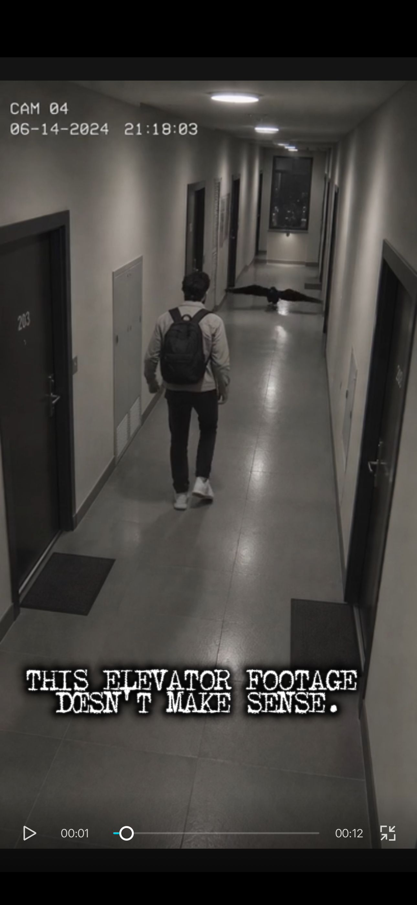
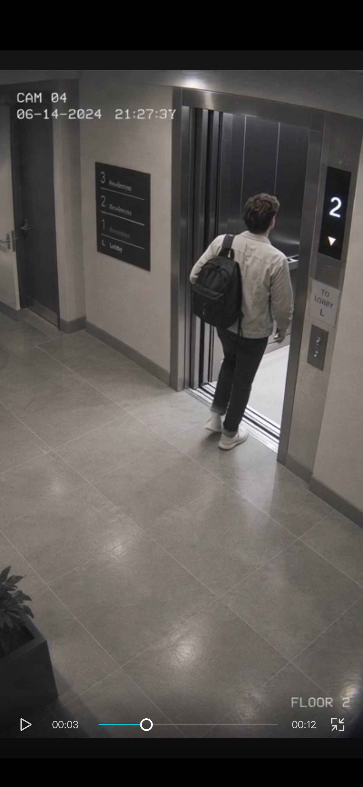
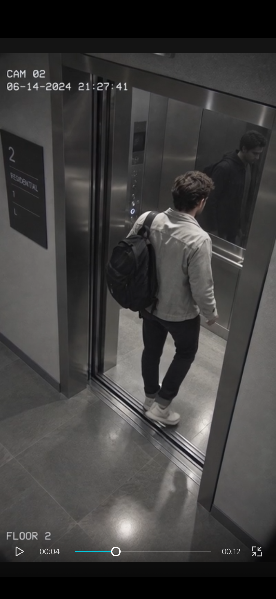
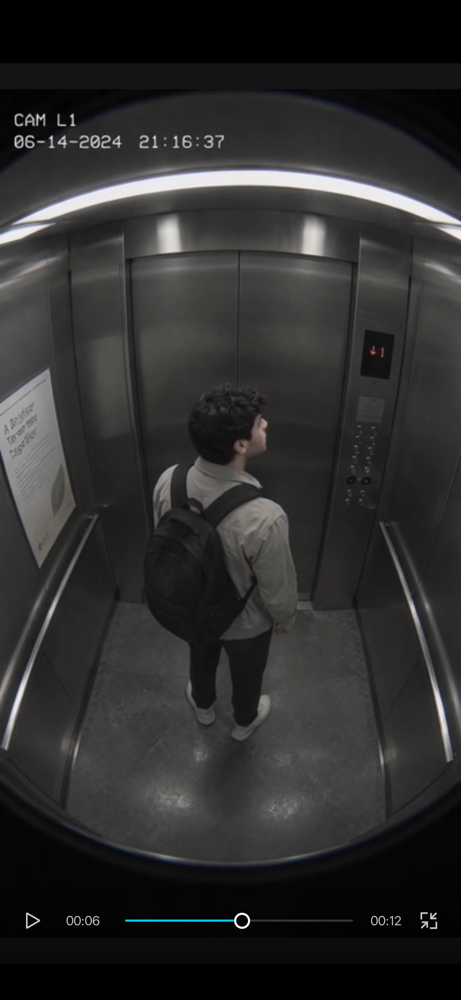
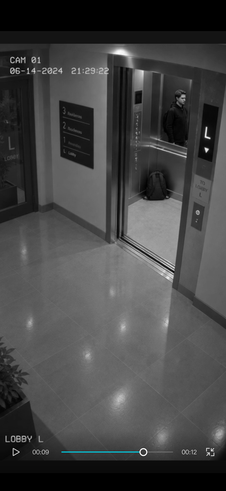
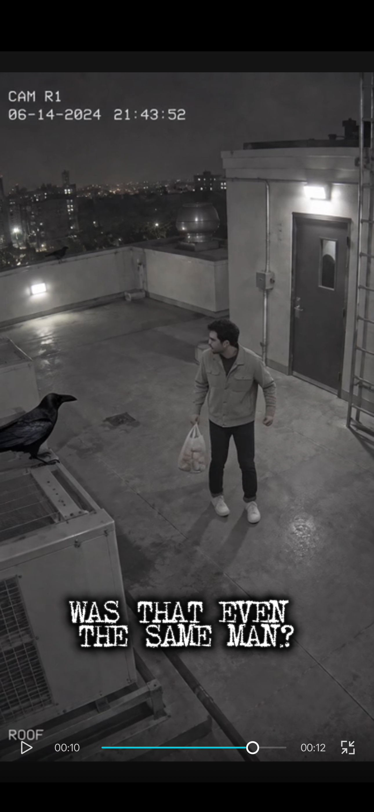
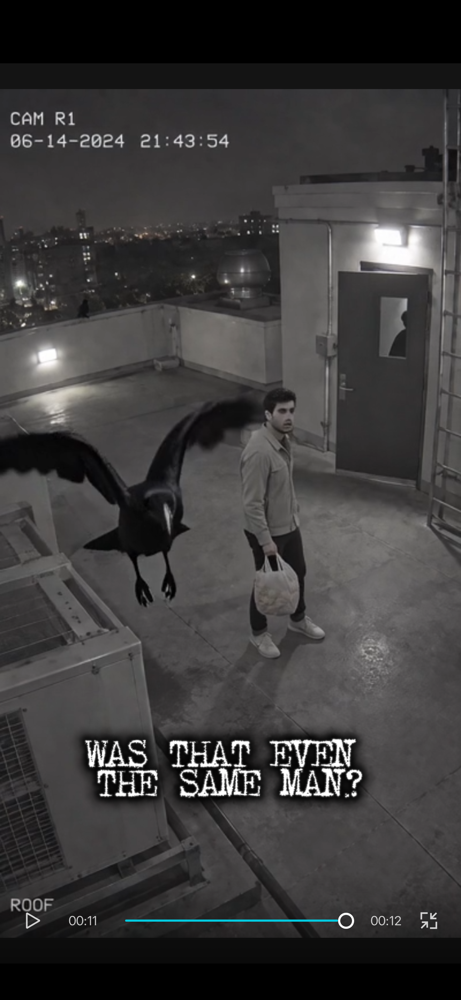

PANIC OPERATOR ARCHIVE
The Elevator That Arrived Without Him
Fragment only. Full record in sealed tray.
01 / Case log
A passenger enters on Floor 2 with a black backpack. The lobby view retains the bag and a dark-clothed figure, but not the passenger in the light jacket. A later rooftop view shows a similar light-jacketed man carrying a grocery bag. We retain the sequence; no recovered camera bridges the changes.
02 / Evidence stills

Something along the route
A dark, wing-like shape occupies the corridor ahead of the passenger. Its identity is unresolved in the supplied record; no interaction is established.

The missing interval
The light jacket and backpack reach Floor 2. The displayed clock has advanced 9 minutes 34 seconds since the corridor view; the intervening movement is absent.

The other jacket
The passenger wears a light jacket at the threshold. The figure in the reflective wall wears dark clothing; the frame does not establish whether this is a reflection or another occupant.

A clock before entry
The passenger and backpack appear inside the cabin. The overlay precedes the Floor 2 entry by eleven minutes, preventing a reliable clock-based reconstruction.

The bag arrives
A black backpack stands on the cabin floor beneath the dark figure. The light-jacketed passenger is absent from the visible lobby frame; no removal of the bag is shown.

Different property
A similar light-jacketed man holds a translucent grocery bag on the roof. The backpack is not visible, and no recovered view records the change of property.

The observation marker
The foreground crow lifts away while the grocery bag remains in the man's hand. The bird's movement supplies no missing link between the lobby and roof.
03 / Operator notes
- CAM / PLACE: 04, 02, L1, 01, R1 / residential corridor, elevator, lobby, roof.
- TIME: 14 June 2024 on the overlays; camera clocks do not establish a reliable chronology.
- CONTINUITY: corridor to threshold shows a displayed gap of 9 minutes 34 seconds.
- REFLECTION: the dark figure in CAM 02 does not match the visible light jacket.
- OBJECT BREAK: backpack in the lobby; grocery bag on the roof. No exchange is recorded.
- OBSERVATION: the rooftop crow is retained as a marker, not assigned a cause.
- OPEN QUESTION: who occupies the elevator when the backpack arrives?